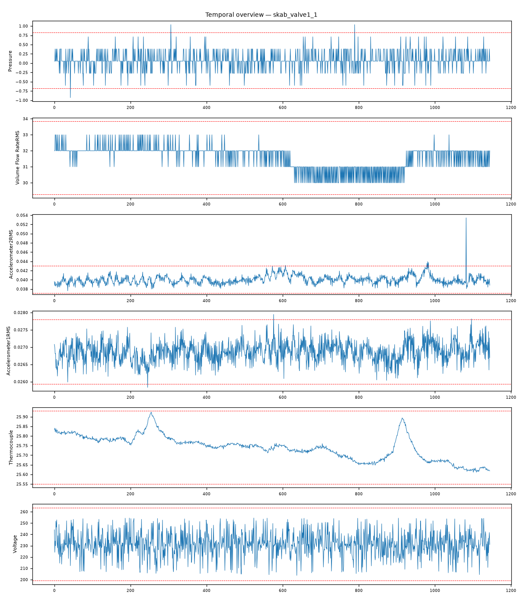

202609121128008_bench_skab_valve1_1 · 执行模式 zcode-direct泵入口阀门节流/关闭（closing the valve at the flow inlet to pump）：吸入侧受限引发叶轮入流失稳，表现为加速度通道剧烈振动爆发（13.56σ）与回路压力脉动（4.02σ），电机电气参数保持正常。
Accelerometer2RMS max|z|=13.56，超3σ占比 0.4%Pressure max|z|=4.02，超3σ占比 0.3%Accelerometer1RMS max|z|=3.45，超3σ占比 0.3%Thermocouple max|z|=2.9，超3σ占比 0.0%Voltage max|z|=2.57，超3σ占比 0.0%Current max|z|=2.23，超3σ占比 0.0%强相关对：Accelerometer1RMS ~ Accelerometer2RMS: r=0.468
| # | 假设 | 机制 | 置信 | 裁决 |
|---|---|---|---|---|
| 1 | 泵入口阀门节流（流体受限） | fluid-restriction | 87% | surviving |
| 2 | 电机/电气侧故障 | operating-point | 10% | eliminated |
| 3 | 轴承/转子机械磨损 | rotor-dynamics | 12% | eliminated |
| 4 | 独立气蚀（供给侧两相流） | cavitation | 15% | eliminated |
| 假设 | 机理链 | 支撑证据 | 证伪条件 |
|---|---|---|---|
| 泵入口阀门节流（流体受限） | 入口阀节流 → 吸入口有效压头下降（brief：压力通道同期异常 max|z|=4.02） 泵入流失稳 → 叶轮载荷脉动 → 泵壳振动爆发（brief：Accelerometer2RMS max|z|=13.56，超3σ占比0.4%） 节流过程为受控液压事件 → 电气侧无强响应（brief：Current max|z|=2.23、Voltage max|z|=2.57 正常） | L3 统计：Accelerometer2RMS max|z|=13.56 为全列谱主导（次高列仅 4.02），超3σ占比 0.4%——短促爆发型事件 L3 统计：Pressure max|z|=4.02 与振动同期异常，符合液压传播路径 L3 统计：Current/Voltage/Temperature 均 ≤2.9σ 正常波动——排除电气与热侧起源 L4 视觉：加速度计2通道短时高幅爆发穿越±3σ阈值线，压力通道同期出现脉动包络（fig_temporal_overview.png） | 若电流/电压出现与振动同期的强异常（≥5σ），电气侧起源将复活 若振动呈全记录持续抬升（漂移形态）而非短促爆发，磨损类假设将复活 |
| 电机/电气侧故障 | 电气故障应首先在电流/电压留下签名，再经负载耦合到振动 | L3 统计：Current max|z|=2.23、Voltage max|z|=2.57 均在正常波动带内 | 若复查发现电流先于振动出现异常，本假设复活 |
| 轴承/转子机械磨损 | 磨损类振动与转速伴生、呈渐进持续性抬升 | L3 统计：Accelerometer1RMS 仅 3.45σ，双加速度通道相关 r=0.468 仅中度耦合 | 若更长记录显示振动基线渐进抬升，本假设复活 |
| 独立气蚀（供给侧两相流） | 独立气蚀需供给侧条件改变（温度升高/含气注入）作为一次起因 | L3 统计：Thermocouple max|z|=2.9、Temperature 未进入异常列谱——无供给侧热力学条件改变证据 | 若流体温度出现显著异常抬升（供给条件改变），本假设复活 |
| 维度 | 得分（/10） |
|---|---|
| data_quality_awareness | 9 |
| variable_classification | 9 |
| time_alignment_and_sorting | 9 |
| visualization_quality | 9 |
| evidence_based_conclusions | 9 |
| correlation_vs_causation | 9 |
| uncertainty_disclosure | 9 |
| report_quality | 9 |
| no_over_claiming | 9 |
| completeness | 9 |
Step 0 setup（setup.mjs）→ Step 1 inspect（inspect.mjs）→ Step 2 本体（context-builder 角色）→ Step 3 统计（stats 包 + 驱动单变量/相关分析）→ Step 3.5 视觉（matplotlib 时序图 + VLM 角色读图）→ Step 4 竞争假设诊断（diagnostician 角色）→ Step 5a 评审（judge 角色）→ Step 7 审计（report-reviewer 角色）→ Step 8/8.5 HTML 与审校。统计引擎：stats-package。

judge 92/100（pass）；审计 ENDORSED：机理链（节流→入流失稳→振动/压力）方向与量级自洽：振动 13.56σ 主导、电气 ≤2.57σ 正常的失配结构是节流判别的核心证据；无物理矛盾。
| 变量 | max|z| | 超3σ占比 |
|---|---|---|
| Accelerometer2RMS | 13.56 | 0.40% |
| Pressure | 4.02 | 0.30% |
| Accelerometer1RMS | 3.45 | 0.30% |
| Thermocouple | 2.9 | 0.00% |
| Voltage | 2.57 | 0.00% |
| Current | 2.23 | 0.00% |
强相关对（经反假相关与多重检验校验）：Accelerometer1RMS ~ Accelerometer2RMS: r=0.468
18 项必需产物：input_manifest / user_context / run_config / ontology / schema / feature_summary / analysis_parameter_selection / scenario_classification / anomaly_report / validate_report / data_analysis_conclusion / plot_manifest / visual_analysis / image_captions / diagnosis / evidence / confidence / reasoning_chain / judge_feedback / report.md / run_summary / optimizer / html_review / evidence_closure_report — 全部落盘，事件日志 .pipeline_events.jsonl 经 pipeline-log-check 校验。
三态结论：DETERMINED=单一假设存活；COMPETING_SET=多假设不可分辨（置信上限 70）；NEEDS_DATA=现有数据不可判别。CDR=Top-1 且 DETERMINED（FDDBenchmark 口径）。证据等级 L1 直接测量 / L3 统计 / L4 视觉 / L5 本体机理。